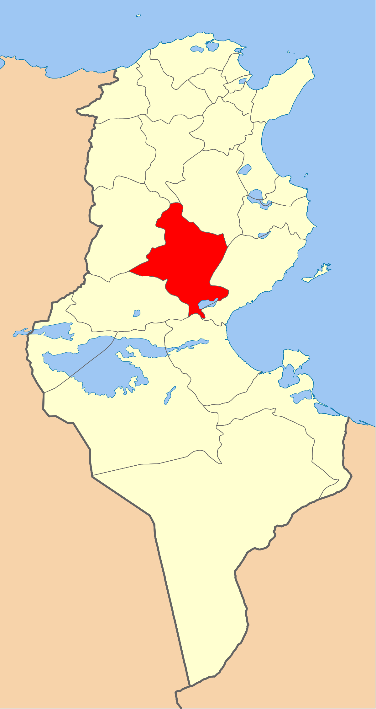
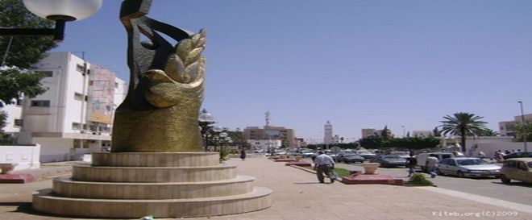
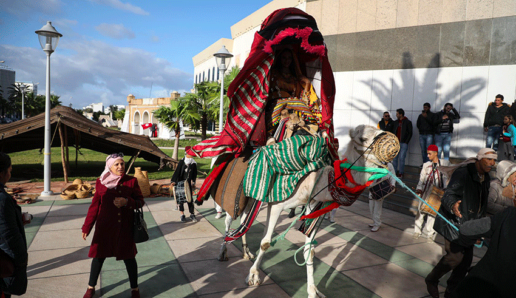
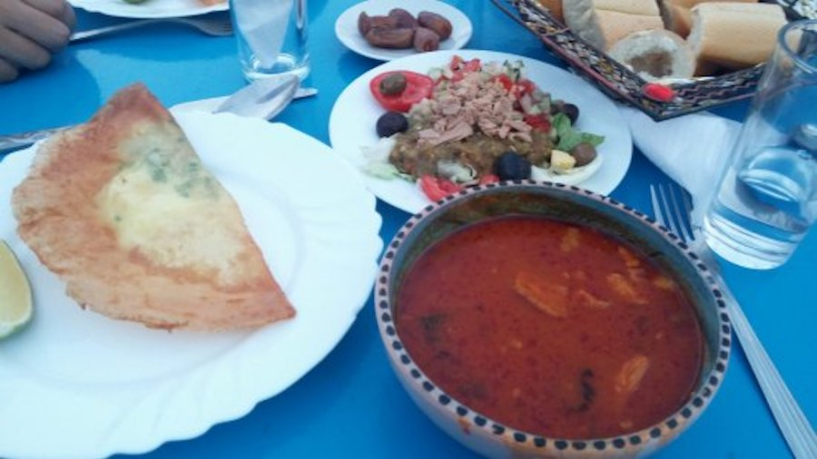
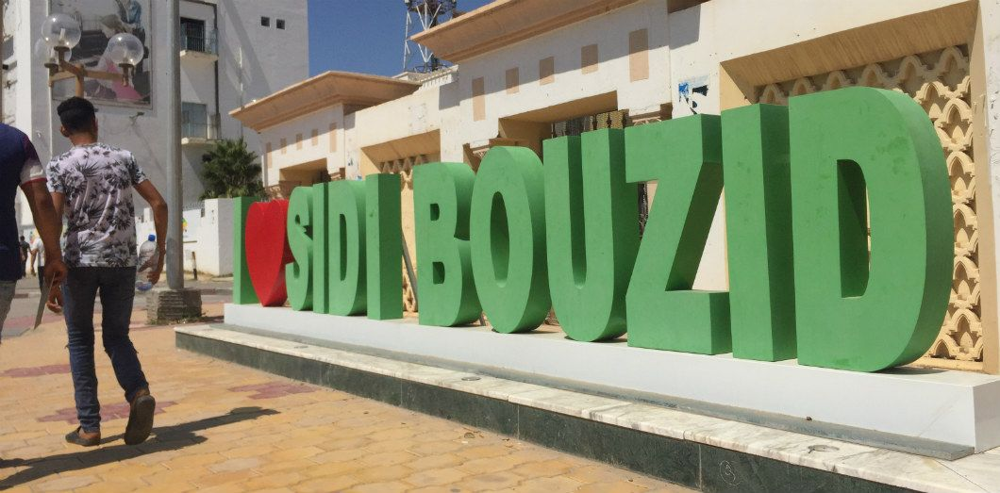
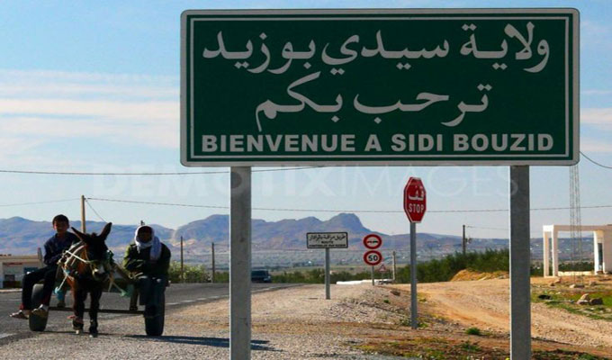

Sidi Bouzid
Le gouvernorat de Sidi Bouzid se situe au centre ouest du pays. Il est limité par les gouvernorats de Kairouan et Siliana au nord, Kasserine et Gafsa à l´ouest, Sfax à l´est et Gabès au sud. Etant donné ses caractéristiques climatiques et géographiques, la région possède plusieurs avantages comparatifs dans le secteur de l´agriculture qui la démarque des autres régions tunisiennes.
Jebel Mghilla
Parc national de Bouhedma
Theatre Afifi
Potterie
Quelques chiffres
Superficie
7 405 Km²
Nombre de maisons
49 000
Habitants
419 200
Localisation
Le gouvernorat de Sidi Bouzid fait la liaison entre la Tunisie steppique et la Tunisie pré-saharienne. Il est entouré par six gouvernorats : Siliana au nord, Gabès au sud, Gafsa et Kasserine à l'ouest et Sfax et Kairouan au nord-est. La moyenne des précipitations annuelles est 234 millimètres et les températures atteignent 13,1 °C en hiver et 27,5 °C en été. Administrativement, le gouvernorat est découpé en douze délégations, 17 municipalités, douze conseils ruraux et 114 imadas1.

Histoire
Sidi Bouzid est le théâtre, le 17 décembre 2010, d'affrontements entre des habitants et les forces de police ; les accrochages se déroulent au lendemain du suicide de Mohamed Bouazizi, un commerçant ambulant, chômeur, qui s'est immolé par le feu en réaction à la saisie de sa marchandise par les autorités5. Ces événements interviennent dans une région où le taux de chômage est élevé. Bouazizi meurt des suites de ses blessures le 4 janvier 2011 au Centre de traumatologie et des grands brûlés de Ben Arous, près de Tunis, où il avait été admis. Ces manifestations marquent le début de la révolution tunisienne, dite "Révolution du jasmin", un soulèvement populaire à dimension nationale qui provoque la fuite, le 14 janvier, du président Zine el-Abidine Ben Ali vers l'Arabie saoudite, après 23 ans au pouvoir. Cette révolution inspire à son tour d'autres soulèvements populaires dans plusieurs pays arabes, le printemps arabe.

Culture

hover me
hover me
hover me
hover me